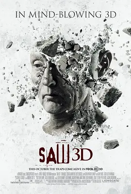

7.8
电锯惊魂7
Saw 3D: The Final Chapter
2010
美国
评分 7.8
导演:
凯文·格劳特
演员:
托宾·贝尔 / 科斯塔斯·曼迪勒 / 贝茜·拉塞尔 / 加利·艾尔维斯 / 肖恩·派特里克·弗兰纳里
类型:
恐怖,悬疑,惊悚
剧情简介
清晨的薄雾尚未散去，城市却因吉尔·塔克的现身而掀起新的波澜。她在警局内详细交代了竖锯事件的来龙去脉，仿佛想用真相换一条退路。然而空气中的压迫感并未因此消失，反而因马克·霍夫曼的失控而愈发浓烈。他从废墟中逃出生天，带着复仇的执念潜伏在暗处，警局四周弥漫着被猎杀者的恐惧，而每一位警员都能感到他随时可能从阴影中现身。与此同时，波比·达根走上电视，宣称自己是竖锯游戏的幸存者。他站在演讲台前，语气激昂，向听众讲述自己的“重生”，并以英雄姿态建立起幸存者互助组织。灯光下，他的笑容自信而坚定，仿佛人生重获意义。然而这些故事只有他自己知道是伪造的。他的名声、财富与关注全都建立在借尸还魂的谎言之上。当波比醒来时，熟悉的机械声从黑暗中传出。他身处一间铁锈斑斑的废旧工厂，空气里充斥着金属的腥味。“竖锯”的录音在空洞的空间里回荡，冷静地拆穿他所有的假象，让他不得不面对那些被他利用过的人的命运。他的妻子、团队成员、身边每一个被他牵连的人都被迫卷入这场残酷的惩戒。机关不断启动，钢索绷紧、齿轮咬合，考验逐步加重，而波比的每一次迟疑都让代价变得更加血淋淋。与此同时，霍夫曼悄无声息地向警局逼近，猎人与猎物的角色在混乱中转换，吉尔的求生希望在逐渐收紧的网中摇摇欲坠。在多线交错的命运里，每个人都被迫面对自己选择的回声。血腥的审判即将收束，而竖锯留下的阴影，也在这最后的篇章中撕开真相的伤口。